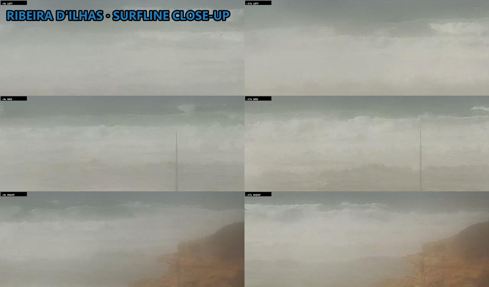
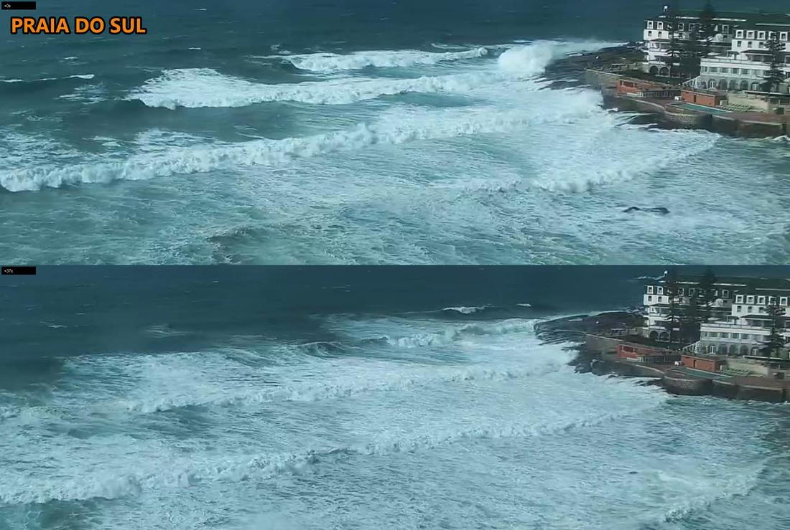
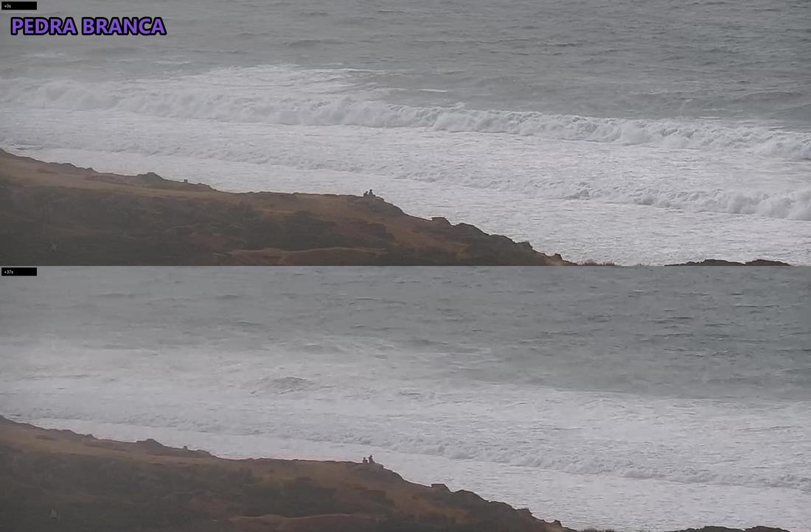
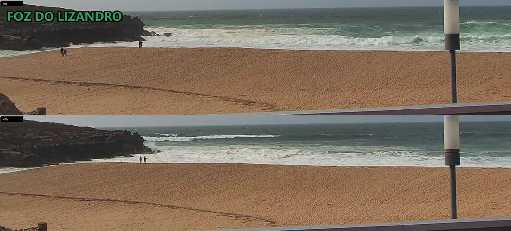

2.4–3.7m★💤 Skip
2.4–3.7m★💤 Skip
liveoffline
| Ribeira | ★ | 2.4-3.7m | fog, whitewater mush | - | ||
|---|---|---|---|---|---|---|
| Norte | ★ | 2.4-3.7m | ||||
| Sul | ★ | 2.4-3.7m | blown out, messy | 0 | ||
| Pedra | ★ | 2.4-3m | closing out, mush | 0 | ||
| Lizandro | ★ | 2.4-3m | closeouts, onshore | 0 |
| Ribeira | ★ | 2.4-3.7m | |
|---|---|---|---|
| Norte | ★ | 2.4-3.7m | |
| Sul | ★ | 2.4-3.7m | |
| Pedra | ★ | 2.4-3m | |
| Lizandro | ★ | 2.4-3m |
| Ribeira | fog, whitewater mush | - | |
|---|---|---|---|
| Sul | blown out, messy | 0 | |
| Pedra | closing out, mush | 0 | |
| Lizandro | closeouts, onshore | 0 |
surf-forecast Ribeira >>
2.4–3.7m★💤 Skip
2.4–3.7m★💤 Skip
2.4–3.7m★💤 Skip
2.4–3.7m★💤 Skip
2.4–3.7m★💤 Skip
2.4–3.7m★💤 Skip
2.4–3.7m★💤 Skip
2.4–3.7m★💤 Skip
2.4–3.7m★💤 Skip
2.4–3.7m★💤 Skip
2.4–3.7m★💤 Skip
2.4–3.7m★💤 Skip
2.4–3.0m★💤 Skip
2.4–3.0m★💤 Skip
2.4–3.0m★💤 Skip
2.4–3.0m★💤 Skip
2.4–3m★forecast💤 Skip
2.4–3.0m★💤 Skip
2.4–3.0m★💤 Skip
2.4–3.0m★💤 Skip
2.4–3.0m★💤 Skip
2.4–3.0m★💤 Skip
2.4–3.0m★💤 Skip
2.4–3.7m★forecast💤 Skip
2.4–3m★forecast💤 Skip
2.4–3.7m★💤 Skip
surfers unclear
close-up fogged/spray-hazed, whitewater mush only; bodies not resolvable, no count

2.4–3.7m★💤 Skip
0 surfers
blown out, messy whitewater over reef; detail + crowd crops readable, nobody out; 0

2.4–3.0m★💤 Skip
0 surfers
long white walls into mush, onshore; 2 watching on rocks, nobody in water; 0

2.4–3.0m★💤 Skip
0 surfers
closeouts across bay, onshore chop; walkers on sand only, nobody out; 0

| When | Ribeira | Norte | Sul | Pedra | Lizandro |
|---|---|---|---|---|---|
| 2026-11-09 12:38afternoon | POOR— | POOR— | POOR0 | POOR0 | POOR0 |
| 2026-11-09 11:31lunch | POOR— | POOR— | POOR— | POOR— | POOR— |
| 2026-11-09 09:41morning | POOR0 | POOR— | POOR0 | POOR— | POOR0 |
| 2026-11-09 07:41sunrise | POOR1 | POOR— | POOR0 | POOR— | POOR0 |
| 2026-11-08 16:41dusk | POOR7 | POOR-TO-FAIR— | POOR-TO-FAIR0 | POOR-TO-FAIR2 | POOR12 |
| 2026-11-08 15:41sunset | POOR4 | POOR-TO-FAIR— | POOR-TO-FAIR0 | POOR-TO-FAIR— | POOR5 |
| 2026-11-08 13:41afternoon | POOR13 | POOR— | POOR0 | POOR-TO-FAIR2 | POOR-TO-FAIR2 |
| 2026-11-08 11:41lunch | POOR30 | POOR— | POOR0 | POOR-TO-FAIR5 | POOR-TO-FAIR18 |